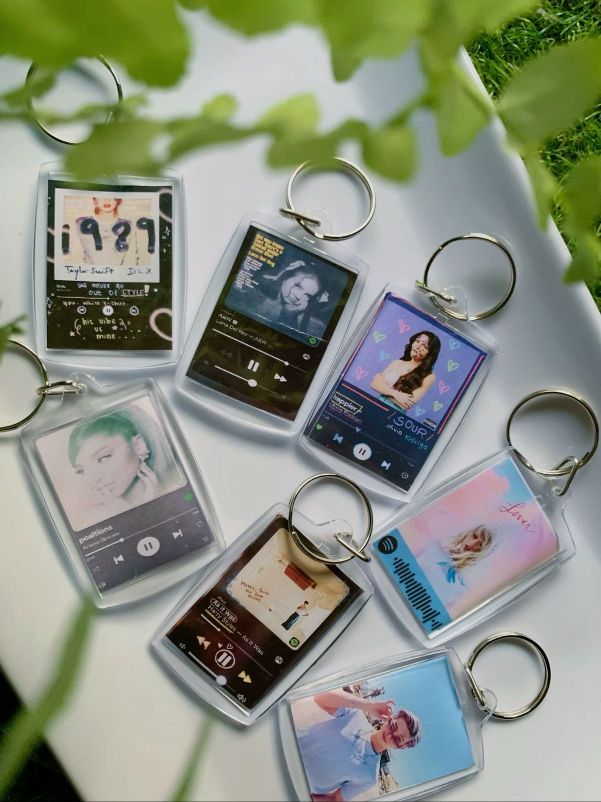

Nuestro prototipo materializa la idea ganadora: un accesorio que combina la elegancia del cristal con la funcionalidad del código QR.
| Elemento | Descripción Técnica | Objetivo de Prueba |
|---|---|---|
| Cuerpo de Acrílico | Corte láser de precisión con acabado transparente. | Validar resistencia a rayaduras y peso. |
| Código QR | Grabado superficial de alto contraste. | Asegurar escaneo rápido desde cualquier celular. |
| Argolla Metálica | Acero inoxidable con recubrimiento de níquel. | Garantizar durabilidad frente a la humedad. |
| Diseño Gráfico | Personalización visual según preferencia del cliente. | Evaluar el atractivo estético (Look & Feel). |
Se imprime el diseño y el qr deacuerdo a las medidas y se pone en el llavero.
Corte de la placa de acrílico y la información personalizada.
Pruebas de lectura del código .
"Este prototipo permite al usuario experimentar la ligereza y el estilo de Your Key Your Style antes de la producción masiva."